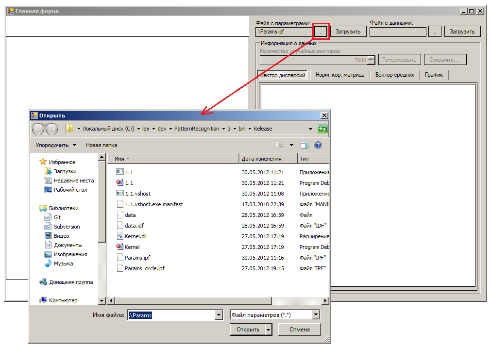
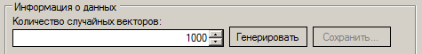
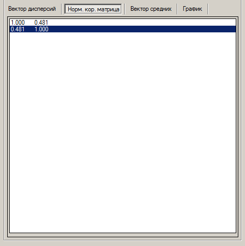
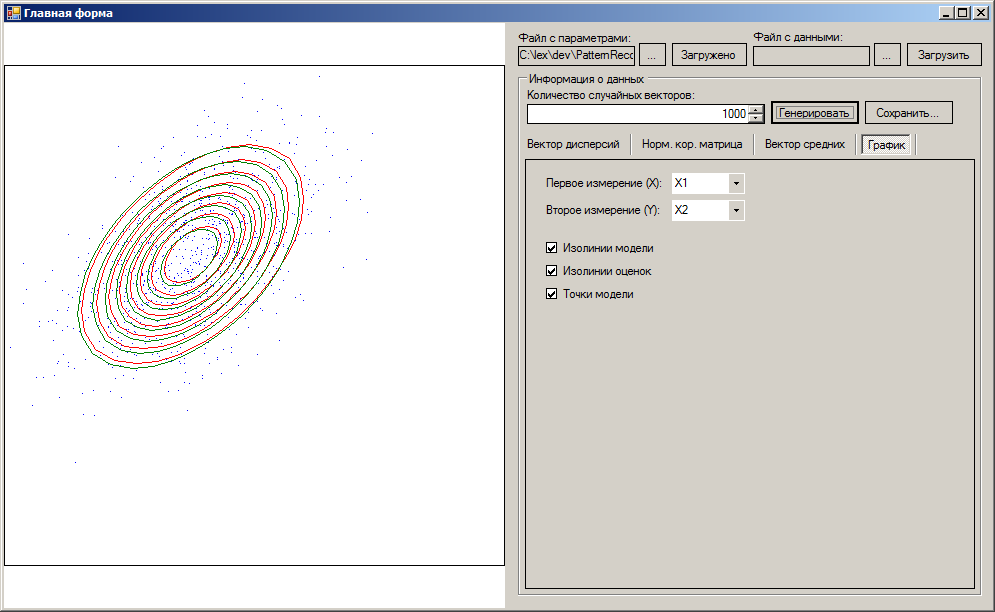
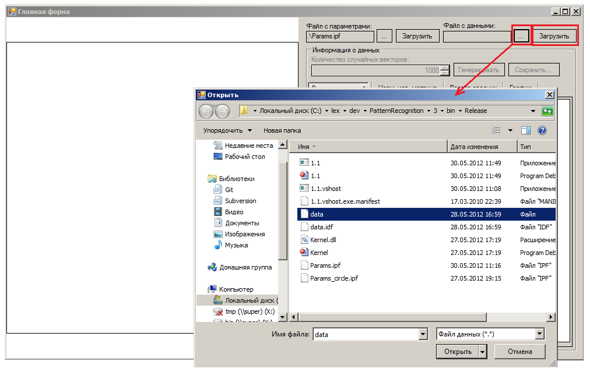

Загрузка параметров нормального распределения.
Размерность, вектор средних значений, нормальная корреляционная матрица, вектор дисперсий.
После выбора файла надо нажать на кнопку "Загрузить"
|

|
В разделе "Информация о данных" выбираем количество случайных
векторов и нажимаем на кнопку "Генерировать". После чего данную
выборку можно сохранить нажав на кнопку "Сохранить".
|

|
Переключаясь по закладкам можно посмотреть оценки характеристик по
выборке (вектор дисперсий, нормальная корреляционная матрица, вектор средних значений).
ВНИМАНИЕ! Все значения, которые здесь показываются для удобства округлены до тысячных.
В расчётах участвуют полноценные значения.
|

|
На закаладке "График" в области "Информация о данных" есть возможность выбрать компоненты
случайного вектора для отображения на графике, а также выбрать что требуется отобразить на
графике (изолинии модели, изолинии оценок, точки модели).
Изолинии модели отображаются зелеными линиями.
Изолинии оценок отображаются красными линиями.
Точки модели отображаются синими точками.
|

|
Загрузка модели из файла производится выбором соответсвующего файла и нажатия соответствующей
кнопки "Загрузить".
ВНИМАНИЕ! При загрузке данных из файла не представляется возможным генерировать выборку и
не представляется возможным нарисовать изолинии модели. Поэтому соответсвующие контролы отключаются.
|

|
Примечание
Пользователь может изменять размеры программы, в следствие чего, будут изменяться масштабы
графика.
Примеры входных файлов (./bin/Release/*):
Params
Params_3
Params_circle
Data
Data_3
|